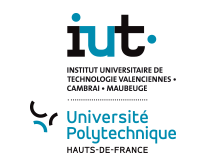
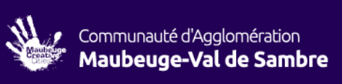
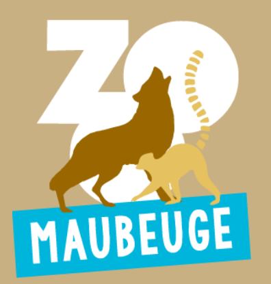

Culture
Patrimoine, lieux et éléments qui participent à l'identité de la ville.

SAÉ 1.06 • DÉCOUVERTE DE L'ENVIRONNEMENT ÉCONOMIQUE
Un site web interactif pour découvrir le territoire sous ses dimensions culturelles, économiques, environnementales et numériques.
Commencer la découverte ↓NOTRE OBJECTIF
Le projet consiste à réaliser un site complet, interactif et informatif consacré à Maubeuge.
Patrimoine, lieux et éléments qui participent à l'identité de la ville.
Organisations et acteurs qui contribuent à la vie du territoire.
Enjeux environnementaux et réflexion autour du positionnement écologique.
Un site interactif et une charte numérique pensée pour le projet.
ONGLET 1
Deux acteurs implantés à Maubeuge et leur rôle dans le territoire.

COLLECTIVITÉCommunauté d'agglomération
La Communauté d'agglomération intervient à l'échelle du territoire dans différents domaines : développement économique, mobilités, environnement, déchets, habitat, culture, sport et tourisme.
Ses compétences concernent directement les services et les projets qui structurent la vie du territoire.

LOISIRS • CONSERVATIONParc animalier
Situé au cœur de la ville, le Zoo de Maubeuge accueille plus de 250 animaux appartenant à 50 espèces et propose des activités de découverte de la faune.
Le parc participe à l'attractivité du territoire et propose des animations pédagogiques autour de la biodiversité et de la conservation.
Logos : sources officielles des organisations — CAMVS et Zoo de Maubeuge. Utilisation dans le cadre pédagogique du projet.
ONGLET 2
Une progression organisée, du brainstorming à la version finale.
Identifier les cinq onglets, les objectifs, le public cible et les éléments attendus.
État : ✓ TerminéDéfinir les idées, la structure du site, le design et les fonctionnalités interactives.
État : ✓ TerminéRechercher et vérifier les informations sur les organisations et les lieux de Maubeuge.
État : ✓ TerminéOrganiser les cinq onglets et définir l'identité visuelle du site.
État : ✓ TerminéConstruire les pages, la mise en forme responsive et les éléments interactifs.
État : ✓ TerminéTester la navigation, les interactions et l'affichage avant la présentation finale.
État : ◐ En coursLe projet a été réalisé en groupe de quatre. Les tâches ont été réparties afin que chaque membre participe aux différentes étapes de conception du site.
Organisation : chaque membre a également participé aux recherches, aux échanges d'idées et aux tests finaux afin de conserver un travail collectif.
MÉDIAS
Quelques visuels permettent de compléter la découverte du territoire.

%20Zoo%20(2).jpg)

Images : Wikimedia Commons.
ONGLET 3
Comparaison des actions environnementales documentées pour les deux organisations présentées dans le site.
| Organisation | Actions écologiques mises en œuvre | Objectif / impact |
|---|---|---|
| Communauté d’agglomération Maubeuge-Val de Sambre | Tri, collecte et réduction des déchets ; compostage et biodéchets ; points de tri ; réemploi. | Réduire la production de déchets, favoriser le tri et la valorisation des ressources. |
| Communauté d’agglomération Maubeuge-Val de Sambre | Protection de la biodiversité, gestion différenciée des espaces verts et actions liées à la Trame verte et bleue. | Préserver les milieux naturels et favoriser la biodiversité locale. |
| Communauté d’agglomération Maubeuge-Val de Sambre | Écologie industrielle et territoriale : mise en réseau d’entreprises pour favoriser l’économie circulaire et le réemploi des ressources. | Faire du déchet d’un acteur une ressource pour un autre et réduire le gaspillage de matières. |
| Zoo de Maubeuge | 20 centimes de chaque entrée individuelle et groupe adulte sont reversés à un fonds de conservation des espèces. | Soutenir des associations de sauvegarde et de protection des espèces animales. |
| Zoo de Maubeuge | Actions de sensibilisation : visites, animations et découverte de la faune. | Faire mieux connaître les animaux et sensibiliser le public à la protection de la biodiversité. |
| Zoo de Maubeuge | Participation à la conservation des espèces menacées et présentation des enjeux liés à leur protection. | Contribuer à la conservation de la biodiversité et à la sensibilisation des visiteurs. |
Sources : sites officiels de la CAMVS et du Zoo de Maubeuge. Les actions sont présentées de façon descriptive, sans établir de classement entre les organisations.
Préserver les espaces naturels et la biodiversité contribue à améliorer le cadre de vie local.
Le tri, le compostage, le réemploi et l’économie circulaire permettent de limiter le gaspillage.
Le site privilégie une présentation légère, une navigation claire et des médias utilisés de manière pertinente.
LIEN AVEC LA SAE
Une organisation peut valoriser ses actions environnementales dans sa communication. Ici, les informations sont présentées de manière factuelle afin de montrer les engagements annoncés par les acteurs locaux.
INTERACTION
ONGLET 4
Notre charte présente l’identité visuelle du site et les règles adoptées pour un usage responsable des outils numériques.
Découverte du territoire
#172B3A#5F7F68#E8DCC8#F8F5EFUne présentation claire et aérée pour faciliter la lecture.
Utiliser les outils numériques de façon respectueuse, professionnelle et raisonnée. Éviter les usages inutiles et respecter les autres utilisateurs.
Nommer clairement les fichiers, les classer dans des dossiers partagés et vérifier les droits d’accès avant chaque partage.
Respecter les droits d’auteur et les licences. Utiliser des ressources autorisées ou libres de droits lorsque cela est nécessaire.
Indiquer l’origine des informations, images et données utilisées. Privilégier les sources officielles et conserver les liens utiles.
Google Drive permet de centraliser les fichiers du groupe, travailler sur des documents partagés, organiser les dossiers et éviter les doublons.
Ne pas diffuser d’informations personnelles sans accord. Limiter les accès aux documents, utiliser des mots de passe solides et ne partager que les données nécessaires.
Supprimer les fichiers inutiles, limiter les doublons, éviter les téléchargements inutiles et privilégier des médias adaptés au besoin du site.
CHECK-LIST AVANT DE PARTAGER
CHARTE RÉDIGÉE
Consultez la charte informatique de la mairie de Maubeuge, réfigée par nos soins dans le cadre de ce projet.
📄 Consulter la charte informatique de la mairie de Maubeuge ↗ONGLET 5
Filtrez les lieux puis cliquez sur « Découvrir » pour obtenir plus d'informations.
Un patrimoine militaire emblématique de Maubeuge.
Un espace de promenade et de nature en ville.
Un parc animalier installé au pied des remparts.
Des équipements et événements qui participent à l'animation du territoire.
QUIZ
À DÉCOUVRIR